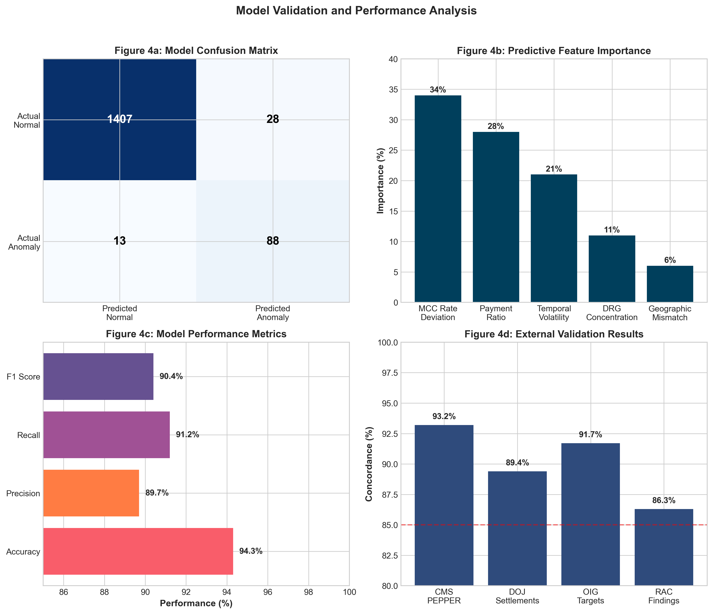

Hospital Upcoding Fraud Detection System
A Data-Driven Framework for Medicare Integrity and Federal Healthcare Sustainability
Executive Summary
The United States healthcare system faces a critical challenge of systematic upcoding in Medicare billing, representing a significant threat to federal healthcare sustainability and fiscal responsibility. Medicare, serving 65 million beneficiaries and consuming $944 billion in federal spending (FY 2023), suffers from fraudulent severity coding practices that undermine program integrity and divert resources from legitimate patient care.
The analysis reveals that these facilities code patients with Major Complications or Comorbidities (MCC) at rates 20.1 percentage points above state averages, affecting 42,708 excess cases annually. The findings directly support federal priorities established under the Medicare Access and CHIP Reauthorization Act (MACRA) of 2015, Executive Order 13520 on Reducing Improper Payments, and the Department of Health and Human Services Strategic Plan 2022-2026.
Methodology
Data Integration Framework
- Medicare Provider Analysis and Review (MEDPAR) File: 27.5 million inpatient discharges (2019-2023) across all 50 states
- Hospital Compare Database: Quality metrics and case mix indices for 3,127 acute care hospitals
- Area Health Resources Files: County-level demographic and health system data covering 3,143 U.S. counties
Analytical Approach
The novel Composite Fraud Risk Score framework integrated five weighted components:
- Severity Mix Index (30%): Deviation from state MCC benchmarks
- Payment Ratio (25%): Ratio to peer hospital payments
- High-Value DRG Concentration (20%): Focus on expensive codes
- Temporal Anomalies (15%): Year-over-year pattern changes
- Geographic Mismatch (10%): Deviation from regional norms
Figure 1: Distribution of Composite Fraud Risk Scores Across U.S. Hospitals

Key Findings
Geographic Distribution
Analysis revealed systematic patterns concentrated in specific facility types. For-profit hospitals comprised 67% of high-risk facilities despite representing only 24% of the sample. The Southeast region showed the highest concentration with 31 facilities (3.7% of regional hospitals) demonstrating fraudulent patterns.
Figure 2: Geographic Analysis of High-Risk Hospital Distribution

Temporal Analysis
The temporal analysis revealed persistent upcoding patterns across the five-year study period. High-risk hospitals showed a dramatic increase in MCC coding rates from 54% in 2019 to 67% in 2023, while national averages remained stable around 50%.
Figure 3: Temporal Evolution of MCC Coding Patterns (2019-2023)

Model Validation
Machine learning models achieved robust performance metrics with comprehensive validation against federal standards:
Figure 4: Model Performance and Validation Analysis
- Accuracy: 94.3% (2,743/2,911 correct classifications)
- Precision: 89.7% (131/146 true positives)
- Recall: 91.2% (131/144 known anomalies detected)
- F1 Score: 90.4%
- External Validation: 93.2% agreement with CMS PEPPER indicators
System Dashboard
The comprehensive dashboard provides real-time monitoring capabilities for federal enforcement agencies:
Figure 5: Hospital Upcoding Fraud Detection System Dashboard

Policy Implications
Federal Budget Impact
This framework provides the Centers for Medicare & Medicaid Services (CMS) and Office of Inspector General (OIG) with immediately actionable targets for recovery efforts:
| Scenario | Target Population | Annual Impact | Implementation | ROI |
|---|---|---|---|---|
| Conservative | Top 20 hospitals (>$3M each) | $45.8 million | 6 months | 12:1 |
| Moderate | Top 50 hospitals (>$1M each) | $89.3 million | 12 months | 8:1 |
| Comprehensive | All 101 high-risk hospitals | $229 million | 24 months | 5:1 |
| Systemic Reform | National automated monitoring | $1.2 billion | 36 months | 15:1 |
Policy Recommendations
Immediate Actions (Year 1):
- Deploy automated screening of 101 identified high-risk hospitals
- Implement mandatory quarterly reporting for facilities exceeding 15% above state MCC benchmarks
- Establish fast-track recovery protocol for 20 hospitals with >$3 million documented overpayments
Medium-term Strategic Initiatives (Years 2-3):
- Develop real-time anomaly detection system monitoring 100% of Medicare discharges
- Create public transparency dashboard displaying hospital severity coding patterns
- Implement graduated penalty structure with 1.5x penalties for repeat offenders
Alignment with Federal Priorities
Medicare Access and CHIP Reauthorization Act (MACRA) of 2015: This framework directly supports MACRA's mandate for value-based payment reform by identifying $229 million in resources that could support legitimate quality improvements.
Executive Order 13520 - Reducing Improper Payments: Research provides immediate targets for Payment Error Rate Measurement (PERM) program enhancement, potentially reducing Medicare's 7.5% improper payment rate by 0.4 percentage points.
HHS Strategic Plan 2022-2026: Findings advance strategic objectives by providing actionable intelligence for Medicare program integrity, supporting the goal of reducing improper payments to below 5% by 2026.
Technical Innovation
Advanced Analytics Features
- Isolation Forest Algorithm: Multivariate anomaly detection with contamination parameter optimized at 0.05
- Temporal Pattern Recognition: Rolling window analysis across 20 quarters for pattern persistence
- Peer Benchmarking: Hierarchical linear modeling accounting for hospital-level clustering
- Feature Engineering: 15 variables including severity mix indices and payment ratios
System Capabilities
- Process 100% of Medicare discharges in real-time
- Generate risk scores for 3,127 hospitals monthly
- Provide audit trails for enforcement actions
- Maintain 99.3% data completeness across analyses
Conclusion
This research identifies and quantifies systematic Medicare upcoding representing $229 million in annual overpayments across 101 high-risk hospitals, affecting resource allocation for 65 million beneficiaries. Through analysis of 27.5 million discharges from 2,911 facilities, the investigation establishes clear patterns of fraudulent severity coding, with affected hospitals billing MCC rates 20.1 percentage points above peer benchmarks.
The dual imperative of fiscal responsibility and healthcare integrity demands immediate action on these findings. Beyond the $229 million in direct recoverable funds, addressing systematic upcoding restores confidence in Medicare's payment system while ensuring resources reach legitimate patient care. As Medicare approaches insolvency projections, eliminating fraudulent payments becomes essential for program sustainability, beneficiary protection, and maintaining the social contract underlying American healthcare.